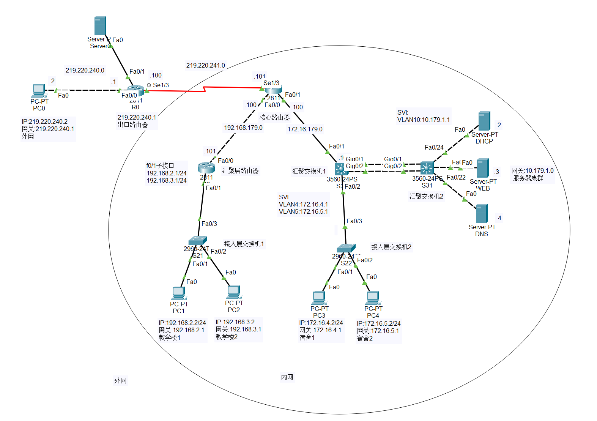

网络综合设计与仿真实现
Image: /images/ 网络综合设计与仿真实现2026.6.23/封面.png
项目报告
课程名称： 《路由与交换技术》 课题名称： 网络综合设计与仿真实现
目录
- 项目目的
- 项目要求
- 主要知识点
- 项目分析
- 4.1 VLAN划分与Trunk配置
- 4.2 VLAN间路由
- 4.3 链路聚合
- 4.4 NAT转换
- 4.5 路由协议与路由重分布
- 4.6 服务器搭建与域名访问
- 4.7 ACL访问控制
- 4.8 端口安全性
- 项目规划设计
- 5.1 设备选型
- 5.2 拓扑结构
- 5.3 IP地址规划
- 项目仿真实现
- 6.1 出口路由器
- 6.2 R1（核心路由器）
- 6.3 R2（汇聚层路由器）
- 6.4 S31（汇聚交换机2）
- 6.5 S32（汇聚交换机1）
- 6.6 S21（接入层交换机1）
- 6.7 S22（接入层交换机2）
- 连通性测试及服务验证
- 7.1 DHCP
- 7.2 内网测试
- 7.3 内外网互通测试（ACL测试）
- 7.4 Web服务器测试
- 7.5 DNS服务器
- 7.6 FTP服务器测试
- 遇到的主要问题和解决方法
- 总结与反思
- 任务分配
项目目的
本项目模拟某企业内部网络可以访问互联网的网络架构，以实现所学知识的综合应用。
项目要求
- 对企业需求进行分析，并对需要实现的功能所采取的方案或者技术进行分析和解释。
- 结合企业所需功能规划网络的拓扑结构，给出所选设备清单和拓扑结构图。
- 合理规划整个网络的IP地址，PC机动态获取IP地址，服务器配置静态IP地址。
- 在企业内网创建多个VLAN，分别代表不同的部门。
- 整个网络拓扑由接入层、汇聚层和核心层构成。接入层选用二层交换机连接不同的VLAN，汇聚层选用三层交换机或者路由器实现不同VLAN之间的通信。核心层实现汇聚层的连接并负责内网和外网之间的互连。
- 不同VLAN之间通过三层交换机和单臂路由实现互相通信。
- 为了提高汇聚层的带宽，提高网络安全，汇聚层的三层交换机之间配置链路聚合。
- 进行NAT转换使内网主机能访问外网，外网主机能访问内网Web服务器。
- 企业内网搭建Web、DHCP和DNS服务器。PC机可以通过域名访问Web服务器。
- 通过ACL控制某些子网对Web服务器的访问。
- 静态路由协议和动态路由协议配置及路由重分布。
- 配置某个端口的安全性。
- 实现全网互联互通。
主要知识点
- VLAN的划分以及Trunk的配置
- 不同VLAN之间的互连
- 端口聚合
- 端口安全性的配置
- 静态路由和默认路由
- RIP（Version 2）
- 单区域OSPF
- EIGRP协议
- 路由重分布
- ACL访问控制
- NAT地址转换
- 服务器的配置
项目分析
VLAN划分与Trunk配置
为隔离不同部门的广播域、提高网络安全性，在企业内网创建了多个VLAN（如VLAN 2、3、4、5、10等）。接入层交换机将不同端口划分到对应VLAN中，并在上行接口配置Trunk模式，允许多个VLAN的流量通过单条物理链路传递至汇聚层。Trunk使用802.1Q封装，有效节省了端口资源并简化了布线。
VLAN间路由
不同VLAN之间的通信由汇聚层设备完成。其中，路由器R2采用单臂路由方式，在其物理接口上划分子接口并封装802.1Q，分别配置各VLAN的网关IP，实现VLAN 2和VLAN 3的互通。而汇聚交换机S31和S32作为三层交换机，通过创建各VLAN的SVI（交换虚拟接口）并启用IP路由，实现VLAN 10、VLAN 4、VLAN 5之间的路由。这种混合使用单臂路由和三层交换的方式，既节约了设备成本，又保证了不同性能需求下的灵活路由。
链路聚合
为提高汇聚层S31与S32之间的带宽并增强冗余，在两者之间配置了链路聚合（EtherChannel）。两台交换机分别将G0/1和G0/2接口捆绑为Port-Channel 1，并设置为Trunk模式。聚合后的逻辑链路既实现了负载分担，又提供了链路备份——当其中一条物理链路故障时，流量自动切换至另一条，从而提高了网络的可靠性。
NAT转换
为实现“内网主机访问外网”和“外网主机访问内网Web服务器”两项功能，在核心路由器R1上配置了两种NAT：
-
动态NAT过载（PAT）：定义公网地址池
pl（219.220.241.110-120），利用ACL 100匹配所有私有地址段（10.0.0.0/8、172.16.0.0/12、192.168.0.0/16），并通过overload关键字复用公网IP。此方案可让大量内网用户共享少量公网IP上网，节约公网地址资源。 -
静态NAT端口映射：将内网Web服务器（10.179.1.3:80）静态映射到公网IP 219.220.241.101的80端口，使得外网用户可通过该公网IP直接访问内网的Web服务。选择静态映射而非端口触发（Port Triggering）是为了确保服务始终可达，无需内网主动发起连接。
路由协议与路由重分布
项目要求同时使用静态路由和动态路由，并进行路由重分布。具体实现中：
-
OSPF动态路由：在核心路由器R1、汇聚路由器R2以及汇聚交换机S31、S32上运行OSPF协议（区域0），各自宣告直连接口网段。OSPF具有收敛快、无环路、支持大型网络等优点，适用于层次化网络。
-
静态默认路由：在S31和S32上分别配置了指向对端的静态默认路由（S31指向10.0.0.1，S32指向172.16.179.100），确保内部设备访问外网时有明确的出口。同时，R1上也配置了默认路由指向外网下一跳。
由于本项目中未混合使用多种IGP（如RIP、EIGRP等），因此未涉及路由重分布。若后续扩展，可利用redistribute命令将静态路由或直连路由注入OSPF。
服务器搭建与域名访问
内网搭建了DHCP服务器（10.179.1.2）、Web服务器（10.179.1.3）和DNS服务器（10.179.1.4）。PC机通过DHCP自动获取IP地址，免去了手动配置的繁琐。DNS服务器负责将内部域名解析为Web服务器的内网IP，使得PC机可通过域名而非IP访问Web服务，提升了易用性。DHCP地址池的规划需注意与已有VLAN网段不重叠，避免地址冲突。
ACL访问控制
根据要求，需要通过ACL控制某些子网对Web服务器的访问。尽管报告配置片段中未直接给出具体ACL命令，但常见做法是在接近服务器的设备（如S31或R1的入方向）配置扩展ACL，拒绝特定源子网（如VLAN 2）的流量，同时允许其他子网访问Web服务器的80端口。
端口安全性
在接入层交换机S21和S22的访问端口上启用了端口安全功能。例如，S21的f0/1端口限制了最大MAC地址数为3，S22的f0/1端口配置了sticky MAC地址，并设置违规行为为restrict。这些措施可以有效防止MAC地址泛洪攻击和非法设备接入，增强了网络接入层的安全性。
项目规划设计
设备选型
| 名称 | 型号 | 功能 |
|---|---|---|
| R0（出口路由器） | 2811 | 连接外网与核心路由器R1，配置串口时钟，提供默认路由指向外网，并作为NAT转换后的外网网关。它仅做基本路由转发，不运行OSPF。 |
| R1（核心路由器） | 2811 | 连接内网三层设备（R2、S32）及出口路由器R0。运行OSPF实现全网路由互通，配置NAPT允许内网访问外网，配置静态NAT映射，同时在外网接口应用ACL 102限制外网主动访问内网私有地址，但放行对Web服务的访问。 |
| R2（汇聚路由器） | 2811 | 通过子接口（单臂路由）连接教学楼VLAN 2和VLAN 3，作为教学楼的默认网关。运行OSPF与R1交换路由，实现教学楼与宿舍、服务器等网段的互通。 |
| S31（汇聚层交换机1） | 2560-24PS | 三层交换机，连接服务器区域，配置VLAN 10 SVI作为服务器网关。运行OSPF，配置ACL 101保护服务器（允许内网所有访问Web/FTP，允许外网仅访问Web）。同时通过Trunk聚合链路与S32互联，实现服务器与其它网段的三层路由。 |
| S32（汇聚层交换机2） | 3560-24PS | 三层交换机，连接宿舍VLAN 4、VLAN 5的SVI作为宿舍网关，运行OSPF。通过Trunk聚合链路连接S31，并上联至R1。实现宿舍与其它网段的三层互通，同时可能作为DHCP中继点。 |
| S21（接入交换机1） | 2960-24T | 连接教学楼PC（VLAN 2、VLAN 3），配置端口安全，上联端口配置Trunk到R2。负责二层隔离和端口安全。 |
| S22（接入交换机2） | 2960-24T | 连接宿舍PC（VLAN 4、VLAN 5），配置端口安全，上联端口Trunk到S32（汇聚交换机2）。负责二层接入和端口安全。 |
拓扑结构

IP地址规划
| 设备 | IP地址 | 网关 |
|---|---|---|
| Pc0 | 219.220.240.2 | 219.220.240.1 |
| Pc1 | DHCP自动配置 | - |
| Pc2 | DHCP自动配置 | - |
| Pc3 | DHCP自动配置 | - |
| Pc4 | DHCP自动配置 | - |
| DHCP服务器 | 10.179.1.2 | 10.179.1.1 |
| WEB服务器 | 10.179.1.3 | 10.179.1.1 |
| DNS服务器 | 10.179.1.4 | 10.179.1.1 |
| 外网DNS服务器 | 219.220.242.200 | 219.220.242.1 |
项目仿真实现
R0（出口路由器）
interface s1/3
ip address 219.220.241.100 255.255.255.0
clock rate 64000
no shutdown
interface f0/0
ip address 219.220.240.1 255.255.255.0
no shutdown
interface fa0/1
ip address 219.220.242.1 255.255.255.0
no shutdown
ip route 0.0.0.0 0.0.0.0 FastEthernet0/0
ip route 0.0.0.0 0.0.0.0 219.220.241.101
R1（核心路由器）
hostname R1
int f0/0
ip address 192.168.179.100 255.255.255.0
no shutdown
int f0/1
ip address 172.16.179.100 255.255.255.0
no shutdown
int s1/3
ip address 219.220.241.101 255.255.255.0
no shutdown
router ospf 1
network 172.16.179.0 0.0.0.255 area 0
network 192.168.179.0 0.0.0.255 area 0
network 219.220.240.0 0.0.0.255 area 0
access-list 100 permit ip 10.0.0.0 0.255.255.255 any
access-list 100 permit ip 172.16.0.0 0.15.255.255 any
access-list 100 permit ip 192.168.0.0 0.0.255.255 any
ip nat pool pl 219.220.241.110 219.220.241.120 netmask 255.255.255.0
ip nat inside source list 100 pool pl overload
ip nat inside source static tcp 10.179.1.3 80 219.220.241.101 80
int s1/3
ip nat outside
int f0/0
ip nat inside
int f0/1
ip nat inside
R2（汇聚层路由器）
hostname R2
int f0/1
no ip address
no shutdown
int f0/1.2
encapsulation dot1Q 2
ip address 192.168.2.1 255.255.255.0
no shutdown
int f0/1.3
encapsulation dot1Q 3
ip address 192.168.3.1 255.255.255.0
no shutdown
int f0/0
ip address 192.168.179.101 255.255.255.0
no shutdown
router ospf 1
network 192.168.2.0 0.0.0.255 area 0
network 192.168.3.0 0.0.0.255 area 0
network 192.168.179.0 0.0.0.255 area 0
S31（汇聚交换机2）
hostname S31
ip routing
vlan 10
vlan 100
int vlan 100
ip address 10.0.0.2 255.255.255.252
no shutdown
int vlan 10
ip address 10.179.1.1 255.255.255.0
no shutdown
interface G0/1
switchport trunk encapsulation dot1q
switchport mode trunk
channel-group 1 mode active
interface G0/2
switchport trunk encapsulation dot1q
switchport mode trunk
channel-group 1 mode active
interface Port-channel1
switchport trunk encapsulation dot1q
switchport mode trunk
router ospf 1
network 10.0.0.0 0.0.0.3 area 0
network 10.179.1.0 0.0.0.255 area 0
ip route 0.0.0.0 0.0.0.0 10.0.0.1
S32（汇聚交换机1）
hostname S32
ip routing
vlan 4
vlan 5
vlan 100
int vlan 4
ip address 172.16.4.1 255.255.255.0
no shutdown
int vlan 5
ip address 172.16.5.1 255.255.255.0
no shutdown
int vlan 100
ip address 10.0.0.1 255.255.255.252
interface G0/1
switchport trunk encapsulation dot1q
switchport mode trunk
channel-group 1 mode active
interface G0/2
switchport trunk encapsulation dot1q
switchport mode trunk
channel-group 1 mode active
interface Port-channel1
switchport trunk encapsulation dot1q
switchport mode trunk
int f0/1
no switchport
ip address 172.16.179.101 255.255.255.0
router ospf 1
network 172.16.4.0 0.0.0.255 area 0
network 172.16.5.0 0.0.0.255 area 0
network 172.16.179.0 0.0.0.255 area 0
network 10.0.0.0 0.0.0.3 area 0
ip route 0.0.0.0 0.0.0.0 172.16.179.100
S21（接入层交换机1）
hostname S21
int f0/1
switchport mode access
switchport access vlan 2
no shutdown
switchport port-security
switchport port-security maximum 3
int f0/2
switchport mode access
switchport access vlan 3
no shutdown
switchport port-security
int f0/3
switchport mode trunk
switchport trunk allowed vlan all
no shutdown
S22（接入层交换机2）
hostname S22
int f0/1
switchport mode access
switchport access vlan 4
no shutdown
switchport port-security
switchport port-security mac-address sticky
switchport port-security violation restrict
int f0/2
switchport mode access
switchport access vlan 5
no shutdown
switchport port-security
switchport port-security maximum 3
switchport port-security violation restrict
int f0/3
switchport mode trunk
switchport trunk allowed vlan all
no shutdown